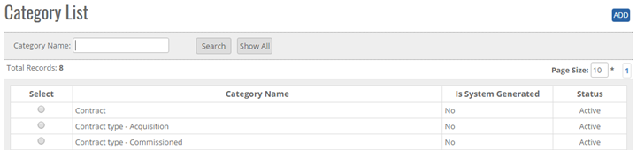
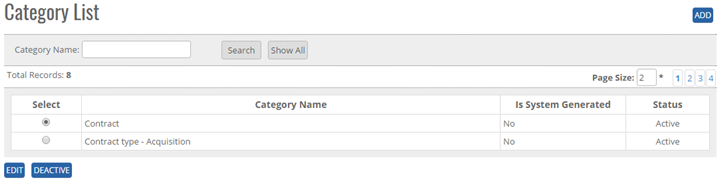


	<section>
		<article>
			<h2>Category<span></span></h2>
			<div>
				<p></p>
				

				<p>Category comes under <b>Commercial</b> module. It can be accessed by user who has rights for this module.</p>

				<p><b>ADD New Category in master</b></p>

				<p>Click Add Button on top right corner of the page as shown in the figure and the following page will be open as shown in below image </p>

				<div class="triangle-border top">
					
				</div>


				<p><b>To Add category list in the system, system will have following fields</b></p>

				<p>- User will enter Category name in Text Box (alphanumeric is valid)</p>

				<p>Click on Save button user will get alert message <b>"Category Record Added successfully"</b>.</p>

				<p>Click on Cancel Button, the Record will not get updated.</p>

				<p><b>Note:</b> Category Name will be Unique in the system.</p>

				<p>- By default Category status will show ACTIVE.</p>

				<p>User cannot update duplicate Category Record, if user update duplicate Record then User will get alert message <b>"Record Already Exist"</b>.</p>

				<p><b>Modifying Existing Category</b></p>

				<p>The user who has right to edit can edit the existing Category list </p>

				<p>Go To>>Master>>Commercial>>Category>>Search Category >>Click Radio Button(Category Name)>>EDIT</p>

				<div class="triangle-border top">
					
				</div>


				<p>System will allow to edit all the fields as shown in above image.</p>
				 
				<p>Click on <b>Update</b> user will get alert message <b>"Record saved successfully"</b>.</p>

				<p>Click on <b>Cancel</b> button the record will not get updated.</p>


				<p><b>Deactivate/ Activate Existing Category</b> </p>

				<p><b>DeActive</b> - Click on Deactivate Button, once the button is clicked it will ask confirmation message "Are you sure you want to Deactivate this record" with "OK and cancel" button</p>

				<p>If user clicks on OK Button, record will get deactivated and if clicked on Cancel, record will not get deactivated.</p>

				<p><b>Active</b> - Same way once a record is deactivated, system will show Active button. If user clicks on Active button, record will get activated.</p>


				<p><b>Search / Show All Criteria</b></p>

				<p>- User can search the Category name and then click on <b>Search</b>, it will show the result as per the search criteria. User can search name by single alphabet.</p>

				<p>- If user want to check all Category name then click on <b>Show All</b> Button. It will show the list.</p>
				 
				<p>- Click on page no, System will navigate the desired page, per page 10 records will be displayed. </p>
			</div>
		</article>
	</section>
	